- 27 Nov, 2020
- 11 min read
INTRODUCTION
According to Abraham Maslow in his theory about human motivations, it’s summarily important to recognize the human being as a living object with different necessities. That’s the reason why we must know how humans interact with our surroundings.
Having said that, it’s well known that companies face a lot of challenges when it comes to satisfying their client’s changing necessities. That’s why they are always planning strategies to their benefit and more importantly their clients.
Currently, many organizations rely on different data-based methods to segment their market by creating subsets based on demographics, needs, priorities, common interests, and other psychographic or behavioral criteria used to understand better their target audience.
According to Accenture[1], banks use their data to create process improvements following these aspects:
-
Personalized products and services.
-
Opportunities to predict patterns.
-
Make agile and accurate decisions.
-
Processes automatization to reduce costs and operative risks.
-
Digital products and services.
In other words, client classification becomes a competitive improvement because companies can use their time and resources for important things. This is also approved by Bain & Company[3], who says that 81% of businessmen consider client classification as an important way to improve companies profit. Bain also found out that companies with excellent client classifications strategies had an increase of 10% on their profit comparing them with the ones that didn’t during a period of five years.
Having said that the main objective of this project was building a customer segmentation based on credit card payments behavior during the last six months to define marketing strategies.
Concerned parties
Banks or financial entities who desire to segment their clients based on predictive models using Machine Learning as an important tool to improve their marketing strategies.
DATA
Data Source
The data source was taken from the Kaggle challenge called Credit Card Dataset for Clustering. The sample Dataset summarizes the usage behavior of about 9000 active credit cardholders during the last six months.
Following is the Data Dictionary for Credit Card dataset:
-
CUSTID: Identification of Credit Cardholder (Categorical)
-
BALANCE: Balance amount left in their account to make purchases.
-
BALANCEFREQUENCY: How frequently the Balance is updated, score between 0 and 1 (1 = frequently updated, 0 = not frequently updated).
-
PURCHASES: Amount of purchases made from the account.
-
ONEOFFPURCHASES: Maximum purchase amount did in one-go.
-
INSTALLMENTSPURCHASES: Amount of purchase done in installment.
-
CASH ADVANCE: Cash in advance given by the user.
-
PURCHASESFREQUENCY: How frequently the Purchases are being made score between 0 and 1 (1 = frequently purchased, 0 = not frequently purchased).
-
ONEOFFPURCHASESFREQUENCY: How frequently Purchases are happening in one-go (1 = frequently purchased, 0 = not frequently purchased).
-
PURCHASESINSTALLMENTSFREQUENCY: How frequently purchases in installments are being done (1 = frequently done, 0 = not frequently done).
-
CASHADVANCEFREQUENCY: How frequently the cash in advance being paid.
-
CASHADVANCETRX: Number of Transactions made with “Cash in Advanced”.
-
PURCHASESTRX: Number of purchase transactions made.
-
CREDIT LIMIT: Limit of Credit Card for user
-
PAYMENTS: Amount of Payment done by the user.
-
MINIMUM_PAYMENTS: Minimum amount of payments made by the user.
-
PRCFULLPAYMENT: Percent of full payment paid by the user.
-
TENURE: Tenure of credit card service for user.
Data Analysis
After looking at the dataset we checked for variables distributions which are presented here:
Balance
The variable “Balance” a mean of 1601.22 USD with a standard deviation of 2095.57 USD (Appendix 1). Regarding its distribution, it’s clear that it has a bias to the right, as is to be expected when working with financial data with a high number of atypical values.
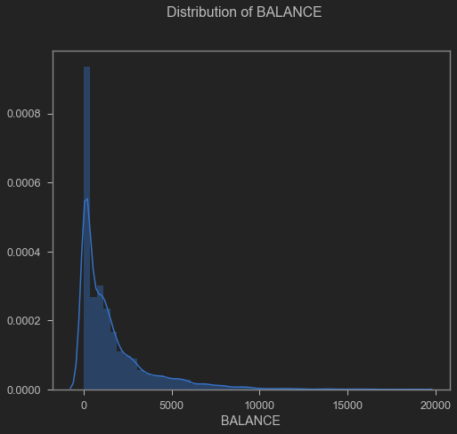
Balance distribution
Purchases
The variable “Purchases” presented a mean of 1025.44 USD and a standard deviation of 2167.1 USD (Appendix 2). Regarding its distribution, it’s clear that it has a bias to the right.
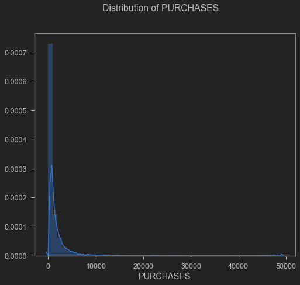
Purchases distribution
Cash Advance
Regarding “Cash Advance” it presented a mean of 994.18 USD and a standard deviation of 2121.45 USD (Appendix 3).
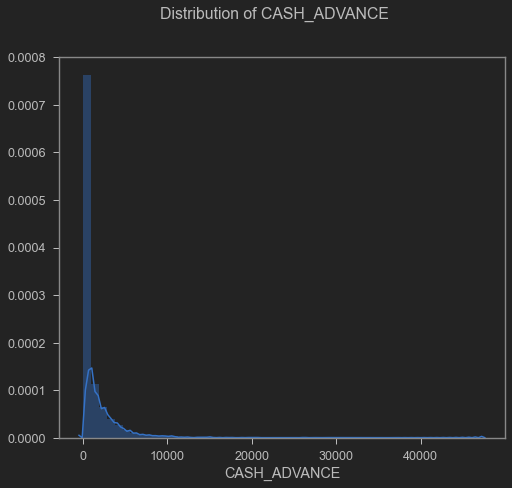
Cash advance distribution
Credit Limit
The “Credit limit” variable presented a mean of 4522.09 USD and a standard deviation of 3659.24 USD (Appendix 4).
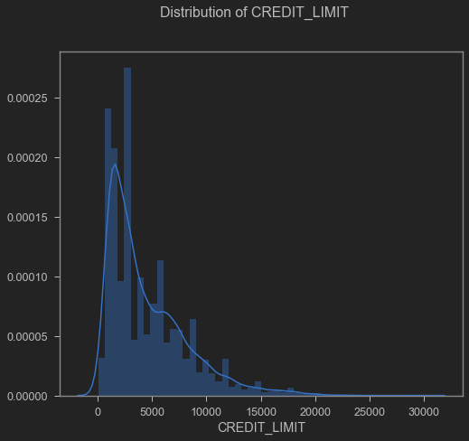
Credit limit distribution
Payments
On the “Payments" statistical results, we found a mean of 1784.47 USD with a standard deviation of 2909.81 USD (Appendix 5).
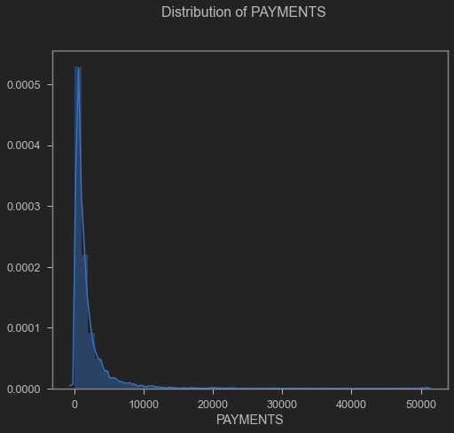
Payments distribution
Minimum Payments
Finally, “Minimum Payments” presented a mean of 864.30 USD and a standard deviation of 2372.56 USD (Appendix 6).
Minimum payments distribution
METHODS
Knowing that the dataset had high values on the variable’s standard deviation like it was presented before, we moved on doing some normalization techniques like StandardScaler, MinMaxScaler, RobustScaler, and Normalizer, being the last two with better results. Later, we used Hopkins Statistics which consists of testing spatial randomness within the data to check for clustering tendencies [4][5]. The values range between 0 and 1. If the result is less than or equal to 0.5 the data is uniformly distributed. On the other hand, if the result is in the range of 0.77–0.99 it represents a high tendency to clustering. For the present case study, the average of the Hopkins statistic resulted in 0.90.
Subsequently, the number of clusters (k) optimized with the silhouette value technique was found, which measures how similar a point is to its cluster (cohesion) compared to other clusters (correlation). The Davies Bouldin metric was also taken into account, which is a measure of the average similarity of each cluster with its most similar, where the similarity is the relationship between the distances within the cluster and the distances between the clusters, where the minimum score is zero, and lower values indicate better grouping. So, the result of the above explanation was the optimized (k) number for the present study and it was 5 clusters, as shown in the following image:
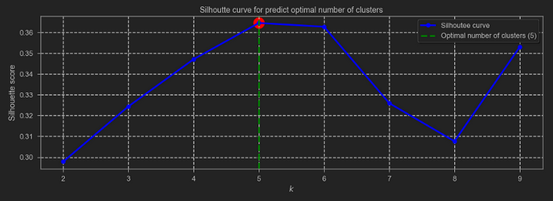
Silhouette curve
Now, since the data set has 18 columns it is essential to apply some method of dimensionality reduction. Without a doubt, one of the most widely implemented methods is PCA (Principal Component Analysis), highlighting that this is traditionally a linear technique to project multidimensional data in subspaces of lesser dimension with a minimum loss of variance [6 ]. However, there are several applications where the data is in a lower-dimensional subspace that is not linear, in these cases linear PCA is not the optimal method to retrieve this subspace and therefore represents the largest proportion variance in the data. Therefore, other methods for non-linear data were explored, such as Isomap (Isometric Mapping) which seeks a lower-dimensional embedding that maintains the geodetic distances between the points [7], highlighting that the present study was defined with two components. In this way, the data was trained with the K-Means algorithm to define each of the clusters, resulting in the grouping that can be seen below:
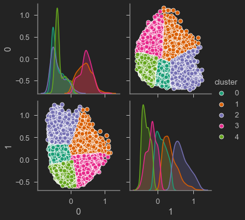
Clustering
Finally, based on the clustering carried out by the algorithm of each client, the Random Forest classifier was applied to determine the most relevant features (columns) for the classification, to reduce data dimensionality for a detailed analysis. The threshold was defined as 0.06, resulting in the most relevant columns being: BALANCE, PURCHASES, CASH_ADVANCE, CREDIT_LIMIT, PAYMENTS, MINIMUM_PAYMENTS with a precision in the classifier of 96%.
RESULTS
From the most essential features, an analysis was made to establish customer's behaviors and the difference between them.
The cluster layout is represented in the following image:
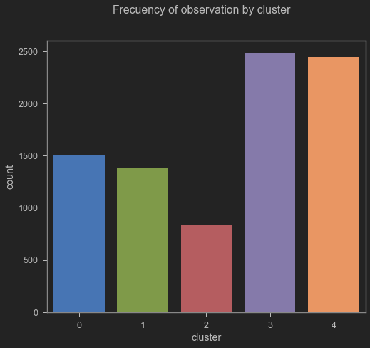
Cluster distribution
From the frequency of the cluster of observation, it can be seen that most of the customers are classified in the third and fourth clusters. From this observation, a detailed analysis was made regarding the behavior of the classification concerning the most important features.
Cash advance & Purchases Vs Clusters
The following distribution shows the behavior of "PURCHASES" as linear, in addition to that, the behavior of "CASH_ADVANCE" is presented using a bar diagram representation. From there, it can be seen that the clusters classified as 0, 2, and 4 represent few payments in advance, as opposed to clusters 1 and 3.
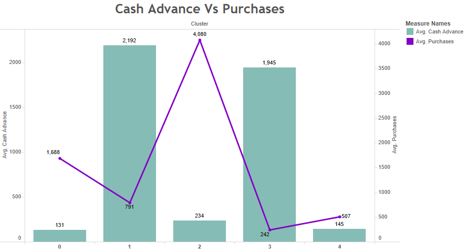
Cash advance Vs Purchases
On the other hand, clients with more “PURCHASES” are classified in cluster 2, unlike the others classified in clusters 0, 1, 3, and 4. If a relationship is made between “PURCHASES” and “CASH_ADVANCE” It can be concluded that clients classified in cluster 2 have high purchases but their cash payment in advance is low, unlike clients classified in clusters 1 and 3 with a high number of cash advances but low purchases.
Balance & Purchases Vs Clusters
In the following distribution, we have the “BALANCE” variable presented using bar diagrams and “PURCHASES” as a linear representation. It can be seen that clients classified in the 3rd cluster present high BALANCE, unlike those classified in the 4th one, having a BALANCE average of 588 USD being the lowest. If we analyze the PURCHASES variable, it can be seen that clients classified in the 2nd cluster are the ones that have the most PURCHASES with an average of 4,080 USD, unlike the clients classified on other clusters.
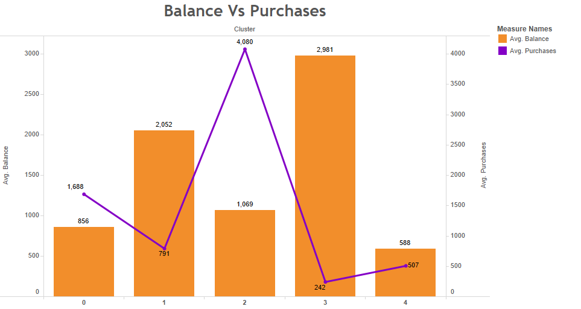
Balance Vs Purchases
When we look at both variables, it can be seen that customers who are classified in the second cluster have a high number of purchases but a low number of balance sheets, which makes sense if we take into account that as purchases increase, the customer’s balance decreases.
Balance & Payments Vs clusters
In the following distribution, we have “BALANCE” presented using bar diagrams and “PAYMENTS” as a linear representation. It can be seen that clients classified in the third cluster present a high BALANCE, unlike those classified in the fourth one, with an average BALANCE of 588 USD, being the lowest. If we analyze the PAYMENTS variable, it can be seen that clients classified in the second cluster are the ones that reach an average value of 4,294 USD followed by the third one with an average of 3,445 USD.
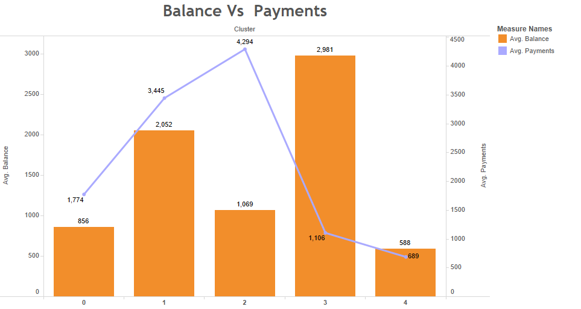
Balance Vs Payments
Now, if a distribution of both variables is observed, taking into account the clients classification, it can be seen that the ones that are classified in the second cluster present a high number of payments but a not so low balance number, which is a good observation because it is appreciated that there is a tendency to pay credit cards.
CONCLUSIONS
According to the results presented above, it can be concluded that the behavior of each of the clusters is as follows:
-
Cluster 0: These kinds of customers pay a minimum amount in advance and their payment is proportional to the movement of their purchases, this means that they are good customers paying the debts they incur with their credit cards.
-
Cluster 1: In this group are presented the customers who pay the most in advance before the loan starts with a balanced balance statement because their purchases are minimal compared to the other groups, also it is the second-best paying.
-
Cluster 2: Customers in this cluster pay the minimum amount in advance, however, it is the group that buys the most, and it is also the group that pays the most. In other words, these types of customers are quite active regarding the number of purchases they make with their credit cards.
-
Cluster 3: These clients are the ones with the highest balance status, in addition to that, they are the second group that pays the most in advance before starting their credit. However, they are the customers who make the least purchases and following the same idea, they are the seconds when it comes to making payments on the debt with their credit card. This makes sense since they have an amount of the loan provided in advance. It can be concluded that they are conservative and meticulous customers when buying.
-
Cluster 4: This group of customers has low-frequency usage of their credit cards since it is the second group that purchases the least, in addition to that, they are customers who pay well in proportion to their purchases. As for the advance payment before starting the loan, it is minimal compared to the other groups.
Finally, marketing strategies can be applied based on these conclusions depending on the company’s goals, for example, if the company wants to carry out a marketing campaign to encourage the use of credit cards and at the same time apply them to customers with good payment behavior, groups 1 and 2 are ideal to take a look at. On the other hand, customers in group 3 are the most conservative when it comes to buying, therefore marketing strategies for this group should be different.
RECOMMENDATIONS
For future studies, both numerical and categorical variables must be taken into account to carry out a more in-depth analysis relating to the types of variables mentioned above. On the other hand, it is recommended to explore different preprocessors and normalizers available in the scikit-learn package [8].
ANNOTATIONS
The charts have been published on a dashboard through Tableau Public. Finally, you can find the source code for this project in the following Github repository.
REFERENCES
[1] R. Daly, “The growth of data in banking is unstoppable”, Accenture Banking Blog, 2020. [Online]. Available: https://bankingblog.accenture.com/growth-of-data-in-banking-is-unstoppable
[2] R. Kazem, A. Faraahi and A. Mastali, “Profiling bank customers behavior using cluster analysis for profitability”, Ieomsociety.org, 2011. [Online]. Available: http://ieomsociety.org/ieom2011/pdfs/IEOM068.pdf
[3] “Find Your Sweet Spot”, Harvard Business Review, 2008. [Online]. Available: https://hbr.org/2008/02/find-your-sweet-spot-1.html
[4] A. Banerjee and R. Dave, “Validating clusters using the Hopkins statistic — IEEE Conference Publication”, Ieeexplore.ieee.org, 2004. [Online]. Available: https://ieeexplore.ieee.org/document/1375706
[5] A. Adolfssona, M. Ackermana, and N. Brownstein, “To Cluster, or Not to Cluster: An Analysis of Clusterability Methods”, Arxiv.org, 2018. [Online]. Available: https://arxiv.org/pdf/1808.08317.pdf
[6] C. Orsenigo and C. Vercellis, “Linear versus nonlinear dimensionality reduction for banks’ credit rating prediction”, Science Direct, 2020. [Online]. Available: https://www.sciencedirect.com/science/article/abs/pii/S0950705113000816
[7] “2.2. Manifold learning — scikit-learn 0.23.2 documentation”, Scikit-learn.org. [Online]. Available: https://scikit-learn.org/stable/modules/manifold.html#manifold
[8] “API Reference — scikit-learn 0.23.2 documentation”, Scikit-learn.org. [Online]. Available: https://scikit-learn.org/stable/modules/classes.html#module-sklearn.preprocessing
APPENDIX
Tables with more important variables developed using statistical analysis are attached.
Appendix 1. Balance
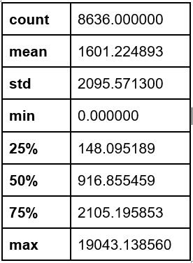
Appendix 2. Purchases
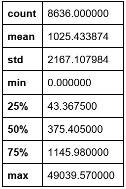
Appendix 3. Cash advance
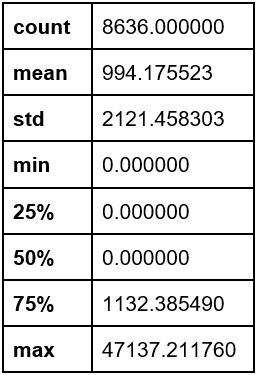
Appendix 4. Credit limit
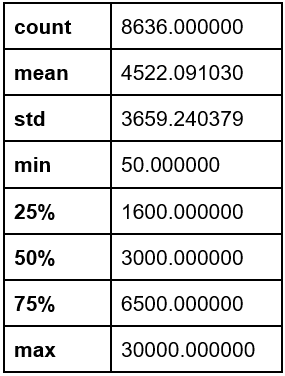
Appendix 5. Payments
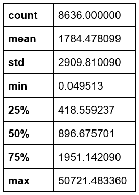
Appendix 6. Minimum payments
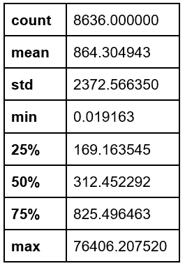